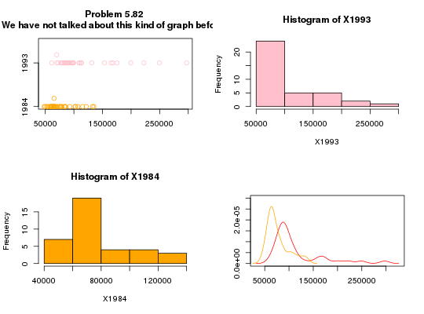
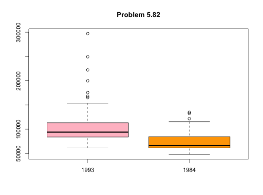
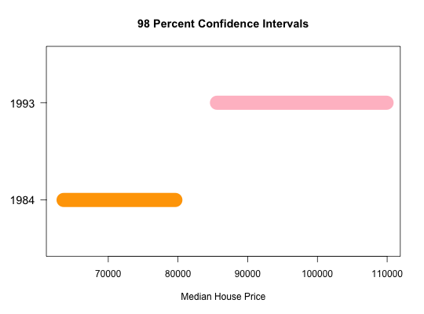

Data for Exercise 5.82
A data frame with 37 observations on the following 3 variables.
Albany
Anaheim Atlanta Baltimore Birmingham
Boston Chicago Cincinnati Cleveland
Columbus Dallas Denver Detroit Ft
Lauderdale Houston Indianapolis Kansas City Los
Angeles Louisville Memphis Miami Milwaukee
Minneapolis Nashville New York Oklahoma City
Philadelphia Providence Rochester Salt Lake City
San Antonio San Diego San Francisco San Jose
St Louis Tampa WashingtonKitchens, L. J. (2003) Basic Statistics and Data Analysis. Duxbury
str(Housing)#> 'data.frame': 37 obs. of 3 variables: #> $ City : Factor w/ 37 levels "Albany","Anaheim",..: 1 2 3 4 5 6 7 8 9 10 ... #> $ X1984: int 52400 134900 64600 65200 66600 102000 77500 59600 65600 60400 ... #> $ X1993: int 109900 222200 94000 113200 89000 165200 131300 85600 89200 89300 ...attach(Housing) stem(X1993)#> #> The decimal point is 4 digit(s) to the right of the | #> #> 6 | 1003899 #> 8 | 1344679990246688 #> 10 | 09033 #> 12 | 1 #> 14 | 4 #> 16 | 586 #> 18 | #> 20 | 0 #> 22 | 2 #> 24 | 9 #> 26 | #> 28 | 7 #>stem(X1984)#> #> The decimal point is 4 digit(s) to the right of the | #> #> 4 | 8 #> 5 | 0248 #> 6 | 000112444555678 #> 7 | 02568 #> 8 | 0345 #> 9 | 3 #> 10 | 237 #> 11 | 5 #> 12 | 2 #> 13 | 35 #>par(mfrow=c(2,2)) stripchart(x=list(X1984,X1993),method="stack",pch=1,cex=1.2, col=c("orange","pink"),group.names=c("1984","1993")) title(main="Problem 5.82 \n We have not talked about this kind of graph before...") hist(X1993,breaks="Scott",col="pink") hist(X1984,breaks="Scott",col="orange") plot(density(X1993),col="red",xlab="",ylab="",main="",ylim=c(0,.00003))lines(density(X1984),col="orange")par(mfrow=c(1,1)) boxplot(X1993,X1984,col=c("pink","orange"),names=c("1993","1984"),main="Problem 5.82")#> #> One-sample Sign-Test #> #> data: X1984 #> s = 37, p-value = 1.455e-11 #> alternative hypothesis: true median is not equal to 0 #> 98 percent confidence interval: #> 63591.10 79622.56 #> sample estimates: #> median of x #> 66600 #>#> Conf.Level L.E.pt U.E.pt #> Lower Achieved CI 0.9799 63600.0 79600.00 #> Interpolated CI 0.9800 63591.1 79622.56 #> Upper Achieved CI 0.9924 62100.0 83400.00#> #> One-sample Sign-Test #> #> data: X1993 #> s = 37, p-value = 1.455e-11 #> alternative hypothesis: true median is not equal to 0 #> 98 percent confidence interval: #> 85591.69 109915.43 #> sample estimates: #> median of x #> 94000 #>#> Conf.Level L.E.pt U.E.pt #> Lower Achieved CI 0.9799 85600.00 109900.0 #> Interpolated CI 0.9800 85591.69 109915.4 #> Upper Achieved CI 0.9924 84200.00 112500.0# 98% CI -> 63591.1 79622.56 and 85591.69 109915.4 # Placing on a common number line... my.axis <- function(side, at, labels,...) {for(i in seq(along=at)) axis(side=side, at=at[i], labels=labels[i],...) } plot(1,type="n",xlim=c(63000,110000),ylim=c(0,1), xlab="Median House Price",ylab="",yaxt="n",main="")title(main="98 Percent Confidence Intervals")my.axis(2,at=c(.25,.75),labels=c("1984","1993"), cex.axis=1.2 ,las=2)lines( c(63591.1, 79622.56),c(.25,.25),col="orange",lwd=24)lines( c(85591.69, 109915.4),c(.75,.75),col="pink",lwd=24)detach(Housing)